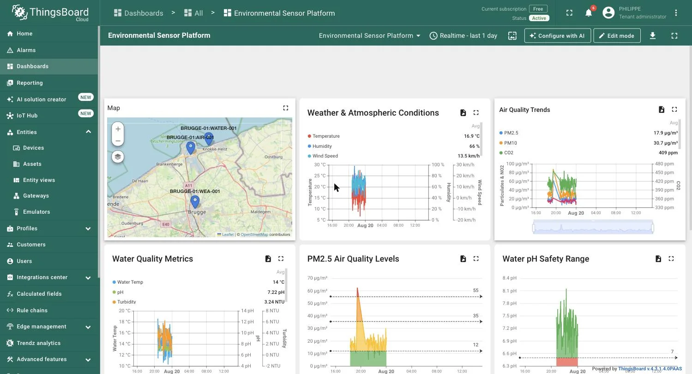
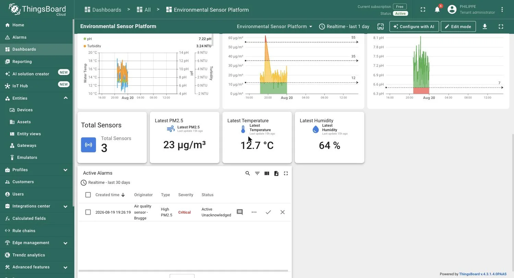
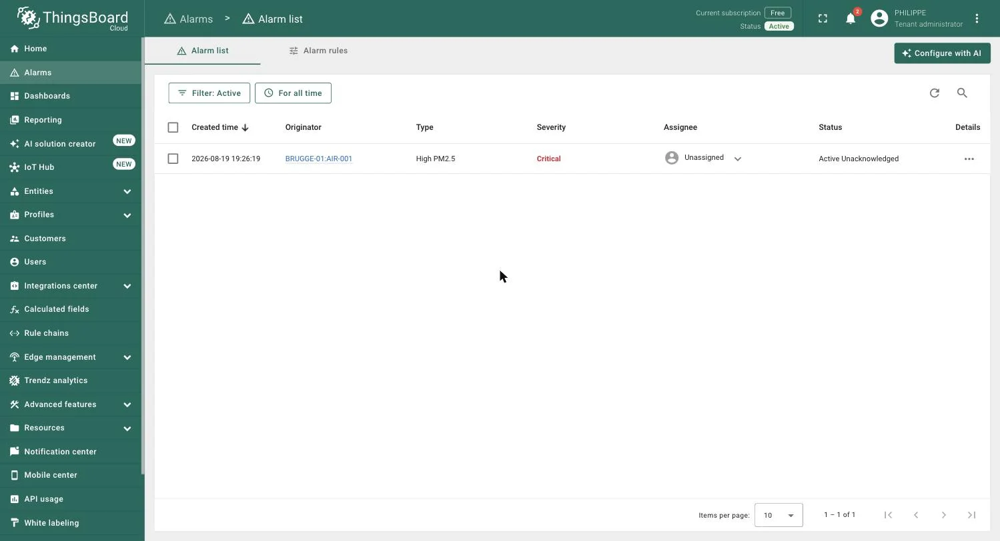

Hundreds of sensors, one trustworthy report.
Air quality, water quality, noise and weather sensors arrive as a CSV export from an asset system. This platform provisions them in ThingsBoard, ingests and validates their telemetry, flags impossible readings and anomalies, and produces a recurring report, all runnable locally with Docker and in CI.

Why it exists
A dashboard full of sensors is only as good as its worst sensor.
Assets are typed into the IoT platform by hand, telemetry goes straight onto charts, and one sensor reporting pH 115 or humidity 1350% quietly drags the monthly averages that end up in a public report.
Assets are imported and provisioned from CSV with validation. Telemetry is checked against physically plausible ranges, anomalies are flagged per sensor, and reports compute their statistics over plausible readings while showing exactly how many were excluded.
Try it · runs in your browser
Explore simulated telemetry, impossible readings included
Sixteen sensors from a 24-hour, 200-sensor simulation made with scripts/simulate_sensors.py. The band is the plausible range from quality.py, the orange points are z-score anomalies as in anomalies.py, and red points are physically impossible. Compare the two summaries underneath.
Simulated data with deliberately injected faults. Impossible readings are drawn at the chart edge so the plausible data stays readable; hover a point for its value and z-score.
How it works
From an asset spreadsheet to a monthly report
Asset import and provisioning
CSV from a materials or asset system is mapped, validated and turned into ThingsBoard devices with attributes, by code instead of manual entry.
Telemetry ingestion
REST and MQTT publishers send telemetry; the processor reshapes wide sensor rows into a long, typed format with timestamps in UTC.
Quality and anomalies
Plausible-range checks per metric, uptime per sensor from timestamp density, z-score and IQR anomalies, and fixed thresholds such as WHO PM2.5 guidance.
Reports and dashboards
An HTML report with summary, uptime and anomaly tables plus CSV exports, a FastAPI service and a Streamlit dashboard.
The flow, step by step
Screens
What it looks like
Screenshots from a real ThingsBoard Cloud tenant. Only the widget layout was arranged by hand.


Evidence
What is real, and what is not
Regenerating the sample report for this page exposed two report bugs, now fixed and tested: statistics were computed over impossible readings, and the anomaly count was capped at 25 (it was 248). The sample report on this site is generated by the fixed code.
REAL Built and verified
- ThingsBoard integration verified against a real ThingsBoard Cloud tenant
- Asset import, telemetry processing, quality checks, anomalies and reports with tests
- CI on GitHub and GitLab, with an automatic mirror to GitLab
- The sample report linked here was generated by the code in this repository
SIMULATED Mocked or not built yet
- Telemetry in the report and explorer is simulated, with injected faults
- No real municipal or customer sensor data
- The earlier GitLab Pages report now sits behind a GitLab login; this site hosts the public copy
Run it yourself
Run it locally
ThingsBoard credentials are only needed for the integration tests and provisioning; see .env.example.
git clone https://github.com/phlppgdfry/environmental-sensor-data-platform
cd environmental-sensor-data-platform
python -m venv .venv && source .venv/bin/activate # Python 3.12+
pip install -e ".[dev]"
python3 scripts/setup_local_env.py
docker compose up -d # PostgreSQL + ThingsBoard
pytest
# simulate 200 sensors and build the report
python scripts/simulate_sensors.py --sensors 200 --hours 24
python scripts/generate_report.py --project BRUGGE-01